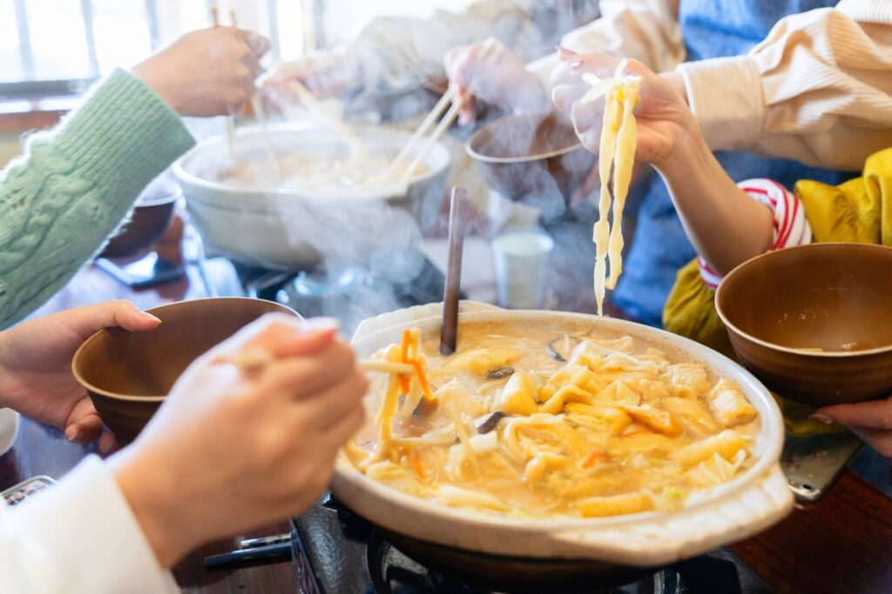

Welcome Large Groups! Enjoy Yamanashi’s Local Cuisine in Kawaguchiko
We offer reservation-based lunch service so visitors to Yamanashi can learn about and taste local specialties such as Hōtō and Yoshida Udon.
Our menus are suitable for travel agencies, schools & clubs, companies, and inbound tour groups.
Rare in the Kawaguchiko area: we welcome groups. Please consider us for your next trip to the area.

Recommended For
-
Guests interested in traditional Yamanashi cuisine
-
Vegan/Vegetarian guests
-
Travelers who want to taste local ingredients
-
Guests who prefer hearty, satisfying meals
-
Organizers looking for group reservations
Bookings accepted 24 hours a day.
For inquiries, please contact us anytime.
Hōtō Lunch – Details
Besides Yoshida Udon, we also serve group Hōtō lunches by reservation only.

What is Hōtō?
A traditional dish loved throughout Yamanashi: thick, flat wheat noodles simmered in a miso-based broth with seasonal vegetables such as pumpkin, carrot, potato, and shiitake mushrooms. Simple yet deeply flavorful, especially appreciated as a warm, nutritious meal in winter.
Serving Style
-
Guests share one pot per table.
-
Hōtō is simmered at the table; thank you for your understanding.
-
Our Koshu Wine Beef Hōtō uses the Yamanashi brand beef Koshu Wine Beef.

|
Premium Recommended Set |
|
|---|---|
| Koshu Wine Beef Hōtō + Unagi Rice Bowl + Shine Muscat Ice Cream + Koshu Wine or Yamanashi Grape Juice | ￥2,700 |
| Hōtō + Gourmet Ingredient Plans | |
|
Vegetable Hōtō |
￥1,200 |
| Chicken Hōtō | ￥1,500 |
|
Koshu Wine Beef Hōtō |
￥1,700 |
| Hōtō + Unagi Rice Bowl Set | ￥1,700 |
| Hōtō + Koshu Wine Beef Sukiyaki Set | ￥2,000 |
|
Gourmet Add-ons |
|
| Mini Unagi Rice Bowl | ￥530 |
| Dessert Set (Shine Muscat Ice Cream + Koshu Wine or Yamanashi Grape Juice) | ￥500 |
| Koshu Wine Beef (per person) | ￥500 |
|
Sukiyaki |
￥800 |
Yoshida Udon
A generous bowl of Yoshida Udon with classic toppings: cabbage, wakame, green onion, tenkasu, and pork.
Originally a simple, everyday dish from Fujiyoshida, Yamanashi, our version is extra hearty.

|
Premium Yoshida Udon Set |
|
|---|---|
| Koshu Wine Beef Udon + Unagi Rice Bowl + Shine Muscat Ice Cream or Yamanashi Grape Juice | ￥2,500 |
| Udon + Gourmet Ingredient Plans | |
| Unagi Rice Bowl Set | ￥530 |
| Udon + Koshu Wine Beef Sukiyaki Set | ￥1,800 |
|
Gourmet Add-ons |
|
| Dessert Set (Shine Muscat Ice Cream + Koshu Wine or Yamanashi Grape Juice) | ￥500 |
| Sukiyaki | ￥800 |
| Chicken Tempura Topping | ￥230 |
Mt. Fuji Spring-water Soba
 Comforting Japanese flavors for all ages.
Comforting Japanese flavors for all ages.
A set meal featuring soba made with pure spring water from Mt. Fuji. Choose from Zaru Soba, or Hot Negi Soba.
|
Premium Soba Set |
|
|---|---|
| Koshu Wine Beef Negi Soba + Unagi Rice Bowl + Shine Muscat Ice Cream + Koshu Wine or Yamanashi Grape Juice | ￥2,450 |
| Soba + Gourmet Ingredient Plans | |
| Koshu Wine Beef Sukiyaki Set | ￥1,750 |
|
Gourmet Add-ons |
|
| Mini Unagi Rice Bowl Set | ￥530 |
| Dessert Set (Shine Muscat Ice Cream + Koshu Wine or Yamanashi Grape Juice) | ￥500 |
| Sukiyaki | ￥800 |
| Chicken Tempura Topping | ￥230 |
Drinks
Bottled beer, house-made umeshu (plum wine), whisky, and a variety of soft drinks are available.
For large groups, advance drink orders help service run smoothly.

Private Course Plan

We offer a private plan for groups of 8 or more guests.
Our venue can accommodate up to 80 guests.
We offer a private room for 15 people and a large banquet hall for 40-50 people, which can be used for school events, sports team celebrations, company trips, gatherings, and year-end parties.
We also offer an all-you-can-drink menu, including soft drinks and alcoholic beverages.
We are open from lunchtime, so feel free to visit during the day.
Course Overview
Here is an introduction to our private course options.
Please note that courses are by reservation only and require a minimum of 8 people.
You can choose from 4 or 7 dish courses.
For hot pots, you can choose from Jiro-style, spicy hotpot, Hoto, or tomato hotpot.
About All-You-Can-Drink
The all-you-can-drink service is for 2 hours. Extensions cost 500 yen per 30 minutes.
You can choose a plan with or without bottled beer. Please let us know your preference when making a reservation.
Course Contents
- Salad
- Daily appetizer
- Assorted fried chicken (Tori-ten)
- Daily dish
- Choice of hotpot
- Udon noodles to finish
- Dessert
* The 4-dish course includes: daily appetizer, Tori-ten, hotpot, and udon noodles.
Course Pricing
All courses include an all-you-can-drink option. All guests in the same group must choose the same course.
All prices include seating fees, private venue rental, and appetizers.
Free for preschool children
| Course Name | Price |
|---|---|
| 4-Dish Course | |
| No drinks included 2-hour all-you-can-drink 2-hour all-you-can-drink (with beer) |
¥1,980 ¥3,480 ¥3,980 |
| 7-Dish Course | |
| No drinks included 2-hour all-you-can-drink 2-hour all-you-can-drink (with beer) |
¥2,480 ¥3,980 ¥3,480 |
| 30-minute extension | ¥500 |
Guests Enjoying the Experience


Frequently Asked Questions
Here are some frequently asked questions from our guests. If you have any questions, please contact us.
- Can we come as a group?
- Yes, we can accommodate group reservations.
We can host up to 80 guests. For larger groups, please contact us as we may be able to accommodate depending on availability.
- Are the ingredients included in the Hoto?
- Yes. Ingredients such as pumpkin and green onions (about 7 types of vegetables) are included.
*Ingredients may vary depending on availability.*
- Do you provide service in English?
- Yes. Our staff can assist in English, so international guests are welcome.
- Can I use a credit card?
- Yes. We accept credit cards (VISA, Mastercard, American Express only).
- How long does it take from Lake Kawaguchiko?
- It takes about 5 minutes by car.
- How long is the walk from the nearest station?
- The nearest station is Kawaguchiko Station on the Fujikyu Line. It’s about a 12-minute walk.
- Do you have parking?
- Yes. We have free parking for about 20 cars in front of the restaurant.
- Can tourist buses park there?
- Yes. Up to 3 tourist buses can park in front of the restaurant.
- Can I make a reservation late at night or early morning?
- Yes. We accept reservations via LINE 24/7. Please feel free to contact us anytime.
- Is a reservation required?
- Reservations are required for group lunch.
Please contact us via the contact page by phone or LINE.
- Is it suitable for vegans or vegetarians?
- All ingredients are vegetables, and the soup is made with miso without any fish stock. So yes, it’s suitable.
- Can I take leftovers home?
- You can take any leftovers home. However, liquid dishes like Hoto soup may be difficult to take out. Please ask our staff.
Customer Feedback


Access
If your group exceeds 80 guests or if the venue is crowded, we may guide you to a different facility. Thank you for your understanding.
Fujiya – Fujiyoshida Kawaguchiko Branch


| 3376-3 Funatsu, Fujikawaguchiko Town, Minamitsuru District, Yamanashi Prefecture 401-0301 | |
| Parking | Free parking available |
| Reservation | Required for group lunches |
| Reservation Hours | Weekdays: 9:30 AM – 6:00 PM Weekends & Holidays: 9:00 AM – 6:00 PM |
| Closed | Irregular holidays |
| Minimum Participants | From 1 guest |
| Nearest Station | Kawaguchiko Station (12-minute walk) |
| Phone | 050-6882-5580 |